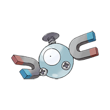
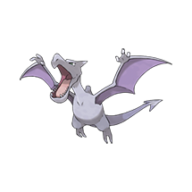

001 - Bulbasaur


Por algum tempo após o nascimento, ele usa os nutrientes contidos na semente em suas costas para crescer.
002 - Ivysaur

Quanto mais luz do sol Ivysaur recebe, mais força brota dentro dele, permitindo que o broto em suas costas cresça mais.
003 - Venasaur

Enquanto se aquece ao sol, ele consegue converter a luz em energia, o que o torna mais potente no verão.
004 - Charmander


A chama em sua cauda demonstra a força de sua força vital. Se Charmander estiver fraco, a chama também queimará fracamente.
005 - Charmeleon

Quando ele balança sua cauda em chamas, a temperatura ao redor dele sobe cada vez mais, atormentando seus oponentes.
006 - Charizard

Se Charizard ficar realmente irritado, a chama na ponta de sua cauda queima em um tom azul claro.
007 - Squirtle


Após o nascimento, suas costas incham e endurecem, formando uma concha. Ele exala uma espuma potente pela boca.
008 - Wartortle

A cauda longa e peluda de Wartortle é um símbolo de longevidade, por isso esse Pokémon é bastante popular entre pessoas mais velhas.
009 - Blastoise

Ele aumenta deliberadamente o peso do seu corpo para poder suportar o recuo dos jatos de água que dispara.
010 - Caterpie


Para proteção, ele libera um fedor horrível da antena em sua cabeça para afastar os inimigos.
011 - Metapod

Ele aguarda o momento de evoluir. Nesse estágio, ele só pode endurecer, então permanece imóvel para evitar ataques.
012 - Butterfree


Ela adora o néctar das flores e consegue localizar manchas de flores que tenham até mesmo pequenas quantidades de pólen.
013 - Weedle

Cuidado com o ferrão afiado em sua cabeça. Ele se esconde na grama e nos arbustos, onde come folhas.
014 - Kakuna

Capaz de se mover apenas ligeiramente. Quando ameaçado, pode esticar o ferrão e envenenar o inimigo.
015 - Beedrill

Possui três ferrões venenosos nas patas dianteiras e na cauda, usados para espetar o inimigo repetidamente.
016 - Pidgey

Muito dócil. Se atacado, costuma levantar areia para se proteger em vez de revidar.
017 - Pidgeotto

Este Pokémon é cheio de vitalidade. Ele voa constantemente por seu vasto território em busca de presas.
018 - Pidgeot

Este Pokémon voa a uma velocidade de Mach 2, em busca de presas. Suas grandes garras são temidas como armas malignas.
019 - Rattata

Mastiga qualquer coisa com suas presas. Se você vir um, pode ter certeza de que outros 40 vivem na área.
020 - Raticate

Suas patas traseiras são palmadas. Elas funcionam como nadadeiras, permitindo que ele nade em rios e caçar presas.
021 - Spearow

Inepto para voar alto. No entanto, consegue voar muito rápido para proteger seu território.
022 - Fearow

Um Pokémon que remonta a muitos anos. Se pressente perigo, voa alto e para longe, instantaneamente.
023 - Ekans

Ele consegue soltar a mandíbula livremente para engolir presas grandes inteiras. No entanto, pode ficar pesado demais para ser movido.
024 - Arbok

O padrão em sua barriga parece ser um rosto assustador. Inimigos fracos fugirão ao avistá-lo
025 - Pikachu


Quando fica irritado, ele imediatamente descarrega a energia armazenada nas bolsas em suas bochechas.
026 - Raichu

Sua cauda descarrega eletricidade no solo, protegendo-o de choques.
027 - Sandshrew


Ele cava tocas profundas para viver. Quando em perigo, ele enrola o corpo para resistir aos ataques.
028 - Sandslash

Ele é perito em atacar com os espinhos nas costas e suas garras afiadas enquanto corre rapidamente.
029 - Nidoran ♀

As fêmeas são mais sensíveis a cheiros do que os machos. Enquanto buscam alimento, elas usam seus bigodes para verificar a direção do vento e se manter a favor dos predadores.
030 - Nidorina

O chifre em sua cabeça atrofiou. Acredita-se que isso acontece para que os filhotes de Nidorina não sejam cutucados enquanto a mãe os alimenta.
031 - Nidoqueen


Nidoqueen é melhor na defesa do que no ataque. Com escamas como armadura, este Pokémon protegerá seus filhos de qualquer tipo de ataque.
032 - Nidoran ♂

O chifre na testa de um Nidoran macho contém um veneno poderoso. Este é um Pokémon muito cauteloso, sempre aguçando suas orelhas grandes.
033 - Nidorino

Com um chifre mais duro que diamante, este Pokémon sai por aí quebrando pedras em busca de uma pedra da lua.
034 - Nidoking

Quando fica furioso, é impossível controlá-lo. Mas na presença de uma Nidoqueen com quem convive há muito tempo, Nidoking se acalma.
035 - Clefairy


Em noites de lua cheia, Clefairy se reúne de todos os lugares e dança. O banho de luar os faz flutuar.
036 - Clefable

Dizem que esse tipo de fada vive em montanhas remotas e silenciosas e tem uma forte aversão a ser vista..
037 - Vulpix

Se for atacado por um inimigo mais forte que ele, ele finge estar ferido para enganar o inimigo e escapa.
038 - Ninetails

Algumas lendas afirmam que cada uma de suas nove caudas tem seu próprio tipo único de poder místico especial.
039 - Jigglypuff

Quando seus enormes olhos oscilam, ele canta uma melodia misteriosamente suave que embala seus inimigos para que durmam.
040 - Wigglytuff

Tem uma pelagem muito fina. Tome cuidado para não irritá-lo, ou ele pode inflar constantemente e bater com o corpo.
041 - Zubat

Ele emite ondas ultrassônicas pela boca para verificar os arredores. Mesmo em cavernas apertadas, Zubat voa com habilidade.
042 - Golbat

Ele adora beber o sangue de outras criaturas. Dizem que, se encontrar outros da sua espécie passando fome, às vezes compartilha o sangue que coletou.
043 - Oddish

Seu nome científico é Oddium wanderus. Dizem que ele percorre distâncias de até 300 metros ao cair da noite, caminhando sobre suas duas raízes.
044 - Gloom

O fluido que escorre de sua boca não é baba. É néctar usado para atrair presas.
045 - Vileplume

O broto floresce com um estrondo e começa a espalhar pólen alergênico e venenoso.
046 - Paras

Escava tocas no solo para roer raízes de árvores. Os cogumelos em suas costas absorvem a maior parte dos nutrientes.
047 - Parasect

O inseto hospedeiro é drenado de energia pelo cogumelo em suas costas. O cogumelo parece ser o único a pensar.
048 - Venonat

Veneno escorre por todo o seu corpo. À noite, ele captura pequenos Pokémon insetos que são atraídos pela luz.
049 - Venomoth

As asas são cobertas por escamas semelhantes a poeira. Cada vez que bate as asas, libera uma poeira altamente tóxica.
050 - Diglett

Vive a cerca de um metro abaixo da terra, onde se alimenta das raízes das plantas. Às vezes, aparece na superfície.
051 - Dugtrio

Suas três cabeças balançam separadamente para cima e para baixo para soltar o solo próximo, facilitando sua escavação.
052 - Meowth

Durante o dia, ele só dorme. À noite, patrulha seu território com os olhos brilhando.
053 - Persian

Embora seu pelo tenha muitos admiradores, é difícil criá-lo como animal de estimação por causa de sua maldade inconstante.
054 - Psyduck

Ele é constantemente atormentado por uma dor de cabeça. Quando a dor de cabeça se intensifica, ele começa a usar poderes misteriosos.
055 - Golduck

Quando ele nada em velocidade máxima usando seus longos membros palmados, sua testa de alguma forma começa a brilhar.
056 - Mankey


Vive em grupos no topo das árvores. Se perde o grupo de vista, fica furioso com a solidão.
057 - Primeape

Ele fica furioso ao sentir que alguém o está observando e persegue qualquer um que encare seu olhar.
058 - Growlithe

Possui uma natureza corajosa e confiável. Enfrenta destemidamente inimigos maiores e mais fortes.
05 - Arcanine

Um antigo pergaminho ilustrado mostra que as pessoas ficavam fascinadas por seu movimento enquanto ele corria pelas pradarias.
060 - Poliwag

O redemoinho em sua barriga é o interior aparecendo através da pele. Fica mais claro depois que Poliwag come.
061 - Poliwhirl

Suas duas pernas são bem desenvolvidas. Embora possa viver no chão, prefere viver na água.
062 - Poliwrath

Suas duas pernas são bem desenvolvidas. Embora possa viver no chão, prefere viver na água.
063 - Abra


Este Pokémon usa seus poderes psíquicos enquanto dorme. O conteúdo dos sonhos de Abra afeta os poderes que o Pokémon possui.
064 - Kadabra

Usando seu poder psíquico, Kadabra levita enquanto dorme. Ele usa sua cauda elástica como travesseiro.
065 - Alakazam

Possui um nível de inteligência incrivelmente alto. Alguns dizem que Alakazam se lembra de tudo o que lhe acontece, do nascimento à morte.
066 - Machop

Todo o seu corpo é composto de músculos. Mesmo sendo do tamanho de uma criança humana, ele pode arremessar 100 adultos.
067 - Machoke

Seu corpo musculoso é tão poderoso que ele precisa usar um cinto de economia de energia para conseguir regular seus movimentos.
068 - Machamp

Ele soca com seus quatro braços a uma velocidade estonteante. Pode desferir 1.000 socos em dois segundos.
069 - Bellsprout

Não importa o que Bellsprout esteja fazendo, se detectar movimento por perto, ele reagirá imediatamente estendendo suas finas vinhas.
070 - Weepinbell

Mesmo cheio de ácido, ele não derrete porque também exala um fluido protetor.
071 - Victreebel

Ele atrai a presa para sua boca com um aroma semelhante ao néctar. A presa indefesa é derretida com um fluido dissolvente.
072 - Tentacool

Quando a maré baixa, Tentacool desidratado pode ser encontrado na praia.
073 - Tentacruel

Nas raras ocasiões em que ocorrem grandes surtos de Tentacruel, todos os Pokémon peixes desaparecem do mar ao redor.
074 - Geodude

Em repouso, parece uma pedra. Pisar descuidadamente nela fará com que ele balance os punhos com raiva.
075 - Graveler

Caminha lentamente, ele rola para se mover. Não presta atenção a nenhum objeto que esteja em seu caminho.
076 - Golem

Ele está envolto em uma carapaça dura, tão áspera quanto placas de rocha. Troca de pele uma vez por ano para crescer.
077 - Ponyta

Cerca de uma hora após o nascimento, a crina e a cauda flamejantes de Ponyta crescem, dando ao Pokémon uma aparência impressionante.
078 - Rapidash

Ele galopa a quase 240 km/h. Com sua crina flamejante e feroz, ele corre como se fosse uma flecha.
079 - Slowpoke

É incrivelmente lento e tolo. Leva cinco segundos para sentir dor quando está sob ataque.
080 - Slowbro

Quando um Slowpoke foi caçar no mar, sua cauda foi mordida por um Shellder. Isso o fez evoluir para Slowbro.
081 - Magnemite

As ondas eletromagnéticas emitidas pelas unidades nas laterais de sua cabeça expelem antigravidade, o que lhe permite flutuar.
082 - Magneton

Três Magnemites estão ligados por uma forte força magnética. Se você chegar muito perto, pode sentir dor de ouvido.
083 - Farfetch’d

Ele não consegue viver sem o caule que segura. É por isso que o defende dos atacantes com a própria vida.
084 - Doduo

Suas cabeças gêmeas têm exatamente os mesmos genes e lutam em perfeita sincronia uma com a outra.
085 - Dodrio

Agora ele tem três corações e três pares de pulmões. Embora não consiga correr tão rápido quanto Doduo, Dodrio consegue correr por períodos mais longos.
086 - Seel

A protuberância em sua cabeça é muito dura. É usada para quebrar gelo espesso.
087 - Dewgong

Ele dorme em águas rasas do oceano durante o dia e procura comida à noite, quando está mais frio.
088 - Grimer

Nascidos do lodo, esses Pokémon agora se reúnem em locais poluídos e aumentam as bactérias em seus corpos.
089 - Muk

Está densamente coberto por uma lama imunda e vil. É tão tóxico que até suas pegadas contêm veneno.
090 - Shellder

Ele está envolto em uma concha mais dura que diamante. Por dentro, porém, é surpreendentemente macio.
091 - Cloyster

Os cloysters que vivem em mares com fortes correntes de maré desenvolvem espinhos grandes e afiados em suas conchas.
092 - Gastly


Ele envolve o oponente em seu corpo gasoso, enfraquecendo lentamente a presa ao envenená-la através da pele.
093 - Haunter

Gosta de se esconder no escuro e bater nos ombros com uma mão gasosa. Seu toque causa tremores sem fim.
094 - Gengar

Para roubar a vida de seu alvo, ele se esconde na sombra da presa e silenciosamente espera por uma oportunidade.
095 - Ônix

Ao cavar o solo, ele absorve muitos objetos duros. É isso que torna seu corpo tão sólido.
096 - Drowzee

Ele se lembra de cada sonho que come. Raramente come os sonhos dos adultos, porque os das crianças são muito mais saborosos.
097 - Hypno

Ao cruzar os olhos com um inimigo, ele usará uma mistura de movimentos psi, como Hipnose e Confusão.
098 - Krabby

Pode ser encontrada perto do mar. As pinças grandes voltam a crescer se forem arrancadas das órbitas.
099 - Kingler

A pinça maior tem 10.000 cavalos de potência. No entanto, é tão pesada que é difícil mirar.
100 - Voltorb

Ele rola para se mover. Se o solo for irregular, um solavanco repentino pode fazê-lo explodir.
101 - Electrode

Quanto mais energia ele carrega, mais rápido ele fica. Mas isso também aumenta a probabilidade de explodir.
102 - Exeggcute

Se você tocar em uma das cabeças do Exeggcute, confundindo-a com um ovo, as outras cabeças se reunirão rapidamente e atacarão você em um enxame.
103 - Exeggutor

Chama-se Selva Ambulante. Cada uma das nozes tem um rosto e uma vontade própria.
104 - Cubone

Quando a lembrança da mãe falecida o faz chorar, seus gritos ecoam tristemente dentro do crânio que ele usa na cabeça.
105 - Marowak

Este Pokémon superou a tristeza e evoluiu para um novo corpo robusto. Marowak enfrenta seus oponentes bravamente, usando um osso como arma.
106 - Hitmonlee

No momento exato em que acerta um chute em seu alvo, Hitmonlee endurece os músculos da sola do pé, maximizando a potência do chute.
107 - Hitmonchan

Ele encurrala seus inimigos com golpes combinados de ambos os lados e então os finaliza com um único golpe direto lançado a mais de 480 km/h.
108 - Lickitung

Se a saliva pegajosa deste Pokémon entrar em contato com você e você não limpá-la, uma coceira intensa surgirá. E a coceira não vai embora.
109 - Koffing

Gás tóxico fica contido em seu corpo fino em formato de balão, o que pode causar explosões enormes.
110 - Weezing

O perfume de primeira qualidade é feito usando seus gases tóxicos internos, diluindo-os ao nível mais alto.
111 - Rhyhorn

Rhyhorn reivindica uma área com mais de 10 quilômetros de raio como seu território. No entanto, aparentemente ele se esquece de onde fica esse território quando corre.
112 - Rhydon

O chifre de um Rhydon é poderoso o suficiente para triturar diamantes brutos. Esses Pokémon lustram seus chifres batendo-os uns nos outros.
113 - Chansey

Este Pokémon gentil põe ovos altamente nutritivos e os compartilha com Pokémon ou pessoas feridas.
114 - Tangela

Escondido sob um emaranhado de vinhas que cresce sem parar mesmo quando as vinhas são arrancadas, a verdadeira aparência deste Pokémon continua sendo um mistério.
115 - Kangaskhan

Embora carregue seu filhote em uma bolsa na barriga, Kangaskhan é ágil e intimida seus oponentes com golpes rápidos.
116 - Horsea

Se atacado, mesmo por um inimigo grande, Horsea nada sem esforço para a segurança, utilizando sua barbatana dorsal bem desenvolvida.
117 - Seadra

O macho cria os filhotes. Se for abordado enquanto estiver cuidando deles, usará seus espinhos tóxicos para afastar o intruso.
118 - Goldeen

Suas nadadeiras dorsal, peitoral e caudal balançam elegantemente na água. Por isso é conhecido como Dançarino Aquático.
119 - Seaking

No outono, seu corpo fica mais gordinho em preparação para o pedido de casamento. Ele ganha cores lindas.
120 - Staryu

Se você visitar uma praia no final do verão, poderá ver grupos de Staryu acendendo luzes em um ritmo constante.
121 - Starmie

Este Pokémon possui um órgão conhecido como núcleo. O órgão brilha em sete cores quando Starmie libera seus poderosos poderes psíquicos.
122 - Mr. Mime

É um especialista em pantomima que consegue criar paredes invisíveis, porém sólidas, usando gestos de mímica.
123 - Scyther

Ele corta a grama com suas foices afiadas, movendo-se rápido demais para ser rastreado pelo olho humano.
124 - Jynx

Em certas partes de Galar, Jynx já foi temida e adorada como a Rainha do Gelo.
125 - Electabuzz

Seu corpo descarrega eletricidade constantemente. Chegar perto dele vai te deixar de cabelo em pé.
126 - Magmar

Encontrado perto da boca de um vulcão. A temperatura corporal deste cuspidor de fogo é de quase 1.000 graus Celsius.
127 - Pinsir

Esses Pokémon se julgam com base nas pinças. Pinças mais grossas e impressionantes os tornam mais populares entre o sexo oposto.
128 - Tauros

Quando mira em um inimigo, ele ataca furiosamente enquanto chicoteia seu corpo com suas longas caudas.
129 - Magikarp

Um Pokémon patético e fraco. Pode pular alto em raras ocasiões, mas nunca mais de dois metros.
130 - Gyarados

Assim que aparece, ele se enfurece e permanece furioso até destruir tudo ao seu redor.
131 - Lapras

Ele transporta pessoas através do mar em suas costas. Pode cantar um canto encantador se estiver de bom humor.
132 - Ditto

Sua capacidade de transformação é perfeita. No entanto, se o fizerem rir, ele não consegue manter o disfarce.
133 - Eevee

Sua capacidade de evoluir para muitas formas permite que ele se adapte de forma suave e perfeita a qualquer ambiente.
134 - Vaporeon

Vive perto da água. Sua longa cauda é pontilhada por uma barbatana, frequentemente confundida com a de uma sereia.
135 - Jolteon

Ele concentra as fracas cargas elétricas emitidas por suas células e lança raios terríveis.
136 - Flareon

O ar inalado é levado até seu saco de chama, aquecido e exalado como fogo que atinge mais de 3.000 graus Fahrenheit.
137- Porygon

É um Pokémon artificial. Como não respira, as pessoas ficam entusiasmadas com seu potencial de ser útil em qualquer ambiente.
138 - Omanyte

Como alguns Omanyte conseguem escapar após serem restaurados ou são soltos na natureza por pessoas, essa espécie está se tornando um problema.
139 - Omastar

Sobrecarregado por uma carapaça grande e pesada, o Omastar não conseguia se mover muito rápido. Alguns dizem que ele foi extinto por não conseguir capturar alimento.
140 - Kabuto

Esta espécie está quase totalmente extinta. Os kabutos trocam de pele a cada três dias, o que torna suas carapaças cada vez mais duras.
141 - Kabutops

Kabutops corta sua presa em pedaços e suga os fluidos. As partes descartadas do corpo viram alimento para outros Pokémon.
142 - Aerodactyl

Este é um Pokémon feroz de tempos antigos. Aparentemente, nem mesmo a tecnologia moderna é capaz de produzir um espécime perfeitamente restaurado.
143 - Snorlax

Este Pokémon glutão come constantemente, exceto quando está dormindo. Ele devora quase 400 quilos de comida por dia.
144 - Articuno

Este lendário Pokémon pássaro pode criar nevascas congelando a umidade do ar.
145 - Zapdos

Dizem que este Pokémon lendário vive em nuvens de tempestade. Ele controla livremente os raio
146 - Moltres

É um dos lendários Pokémon pássaros. Dizem que sua aparição indica a chegada da primavera.
147 - Dratini


À medida que cresce, ele perde muitas camadas de pele. Durante esse processo, é protegido por uma cascata rápida.
148 - Dragonair

Dizem que se ele emitir uma aura de todo o seu corpo, o clima começará a mudar instantaneamente.
149 - Dragonite

Dizem que em algum lugar no oceano existe uma ilha onde eles se reúnem. Só eles vivem lá.
150 - Mewtwo

Seu DNA é quase o mesmo do Mew. No entanto, seu tamanho e disposição são muito diferentes.